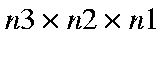
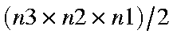

(This program is NOT a function within MOPAC, instead it is a utility program for building data sets for infinite systems. A copy of the MAKPOL executable for use on WINDOWS systems is available.)
Construction of data sets for multiple unit cells is tedious. By automating this process, only the fundamental unit cell need be specified, the other unit cells being generated by translation. In addition, since the geometry of all fundamental unit cells in a polymer are identical, symmetry conditions can be imposed on each unit cell. This has two advantages: first, the calculation runs significantly faster, and second, periodic boundary conditions are imposed not only on the whole cluster, but also on each fundamental unit cell.
A data set for MAKPOL is similar to a data set for MOPAC. It consists of one or more lines of keywords, followed by comments (if needed), then a geometry in Cartesian or internal coordinates. The name of the input data set should be of form 'make_ filename.dat', in which case the resulting data set will be '
filename.dat', in which case the resulting data set will be ' filename
filename .dat'.
.dat'.
MAKPOL uses the unit cell supplied by the user to generate all the unit cells used in the cluster unit cells. The number of unit cells in the cluster is determined by the keyword MERS(n3,n2,n1). If the system is a layer structure then "n3," is omitted. If the system is a polymer, then "n3,n2," is omitted. The order in which cells are generated is as follows: Cell(0,0,0), Cell(0,0,1), Cell(0,0,2), ...Cell(0,0,N1-1), Cell(0,1,0), Cell(0,1,1), ...Cell(0,N2-1,N1-1), Cell(1,0,0), ...Cell(N3-1,N2-1,N1-1).
See Description of BZ for more information on the values of n1, n2, and n3. and MERS for how to construct a data set for use by BZ
The geometry of the extended system is first calculated in Cartesian coordinates. There are two ways the atoms can be arranged. The default order is as follows: all atoms in the first unit cell, all atoms in the second unit cell, etc. An alternative is to have atom one in all the unit cells then atom two in all unit cells, then atom three, etc. The choice of which order to use depends on the purpose for which the cluster data set will be used.
The whole system is then converted into internal coordinates if INT is present, and the translation vectors added. If wanted, symmetry conditions can be imposed - this is useful when the geometry is to be optimized.
Make up a data set for the solid. The name of the data set must be in the form "Make_<data-set name>.dat" An example of the data set for rutile, would be as follows:
MERS=(3,2,3) Rutile Ti 0.000000000 1 0.000000000 1 0.000000000 1 O -0.896000000 1 -0.896000000 1 -1.479000000 1 O 0.896000000 1 0.896000000 1 -1.479000000 1 O 1.401000000 1 -1.401000000 1 0.001000000 1 O -1.401000000 1 1.401000000 1 0.001000000 1 Ti -2.297000000 1 -2.297000000 1 -1.479000000 1 Tv 0.000000000 1 0.000000000 1 -2.959000000 1 Tv 0.000000000 1 4.594000000 1 0.000000000 1 Tv 4.594000000 1 0.000000000 1 0.000000000 1
To use this data set, put it into a file called "make_Rutile.dat"
Edit the command file "makpol.cmd" to replace the path in "s:\utility\makpol-F90" with the path to the folder where Makpol-F90.exe is stored.
Replace the "vi" editor with your preferred editor. If you don't have one, remove this line, and edit the data set after makpol.cmd has finished.
To run MAKPOL, use
the command "Makpol <file>", e.g. "Makpol Rutile" Note that although the
data set has the name "Make_Rutile.dat", the command argument does not include
the "Make_" or the ".dat"
After Makpol is run, a new file called "<file>.dat", e.g., "Rutile.dat", will be
created. This is a data file for use with MOPAC. Before running it,
however, edit the file to check that it is big enough, that the three
translation vectors are large enough, and that the data set is not too big -
data sets with more than ~300 atoms might take a long time to run. A
simple check on the Tv would be to verify that the largest difference in the "X"
values of the three Tv is greater than about 6
Ångstroms for an insulator and greater than about 8 Ångstroms for a narrow band
gap solid, then do the same for "Y" and "Z".
Any of the keywords used by MOPAC can be used in a MAKPOL data set, but, only a few keywords will be used by MAKPOL: the rest will be ignored. Keywords that are used in MAKPOL are given below.

, or, if BCC is used,
.